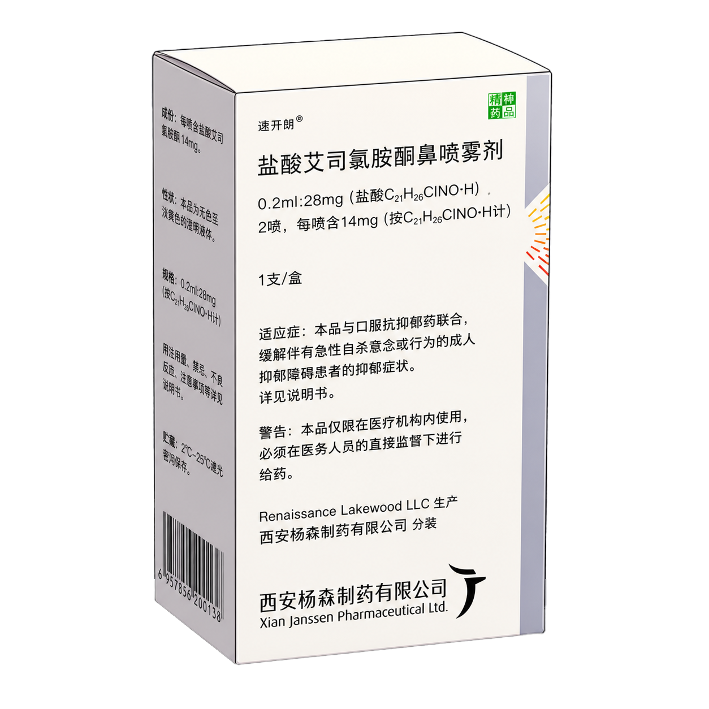
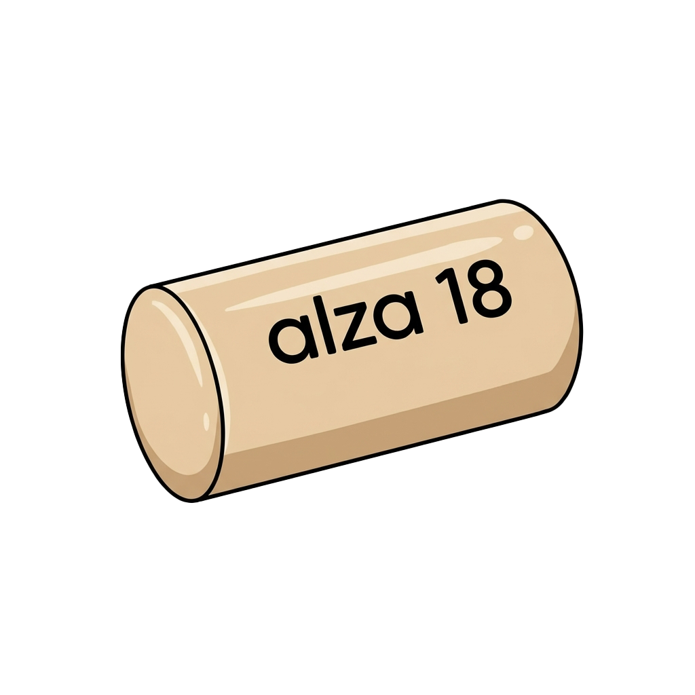
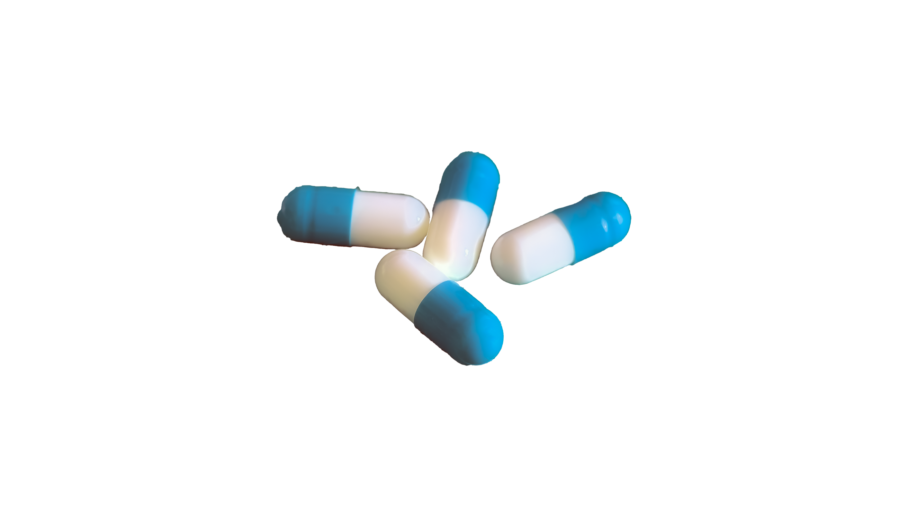

Stahl 精神药理学全景图谱
第5版全书 14 章全域机制 · 靶点与回路全景闭环
✨ 核心专病与前沿机制透视

🌟 开屏单点探索 (艾司氯胺酮 Spravato®)
🌿 地达西尼 (京诺宁®) / GABA-A α1 部分变构

🚀 赖右苯丙胺（利右苯丙胺） / 维洛沙嗪 (ADHD) 🚨 自杀干预 (MDSI) / 难治抑郁 (TRD)
💎 托鲁地文拉法辛 (若欣林®) / SNDRI
🌸 佐拉诺酮 (Zurzuvae) / 产后抑郁 (PPD)
⚡ 右美沙芬-安非他酮 / 快速抗抑郁 (Auvelity)
🔮 乌洛他隆 / 卢玛哌酮 (Caplyta) / TAAR1
 🕯️ 氟伏沙明 (兰释®) / 氯米帕明 / 强迫障碍 (OCD)
🛡️ 哌唑嗪 / 普萘洛尔 / 创伤恐惧消退 (PTSD)
🧩 多奈哌齐 (安理申®) / 美金刚 / 仑卡奈单抗
🍷 伐尼克兰 (畅沛®) / 纳曲酮 / 戒断奖赏回路
⭐ 布瑞哌唑 (敏达妥®) / 卡利拉嗪 (罗珊®)
🧠 伏硫西汀 (心达悦® / 海马 LTP 突触再生)
🕯️ 氟伏沙明 (兰释®) / 氯米帕明 / 强迫障碍 (OCD)
🛡️ 哌唑嗪 / 普萘洛尔 / 创伤恐惧消退 (PTSD)
🧩 多奈哌齐 (安理申®) / 美金刚 / 仑卡奈单抗
🍷 伐尼克兰 (畅沛®) / 纳曲酮 / 戒断奖赏回路
⭐ 布瑞哌唑 (敏达妥®) / 卡利拉嗪 (罗珊®)
🧠 伏硫西汀 (心达悦® / 海马 LTP 突触再生)
 🛡️ 普瑞巴林 (乐瑞卡®) / 丁螺环酮 / 广泛焦虑
🛡️ 普瑞巴林 (乐瑞卡®) / 丁螺环酮 / 广泛焦虑
 ⚖️ 心境稳定剂 (碳酸锂 / 丙戊酸钠 / 卡马西平)
🌿 苯二氮䓬类药物 (劳拉西泮 / 阿普唑仑)
🌐 展开全景总网 (187点/384连线)
⚖️ 心境稳定剂 (碳酸锂 / 丙戊酸钠 / 卡马西平)
🌿 苯二氮䓬类药物 (劳拉西泮 / 阿普唑仑)
🌐 展开全景总网 (187点/384连线)
📐 排布形态
🎨 实体类别 (以相互关系为证据连接呈现)
重置
精神药物
...
...
🔗 关联受体靶点与神经回路 (点击跳转)